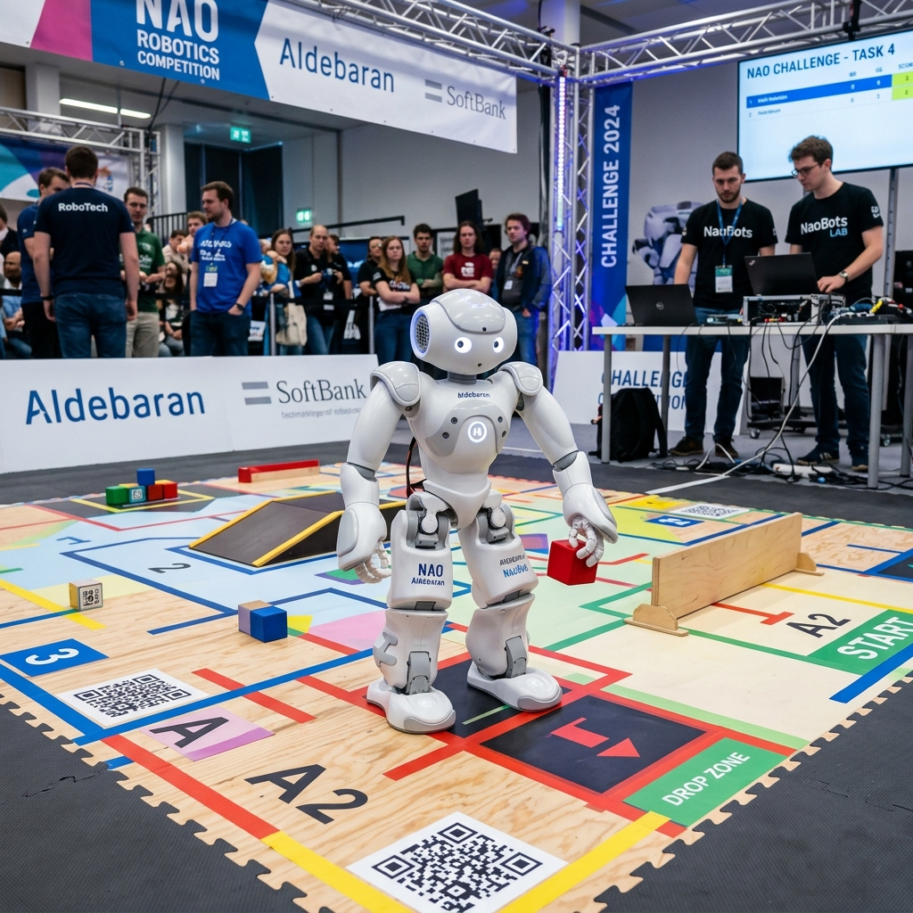
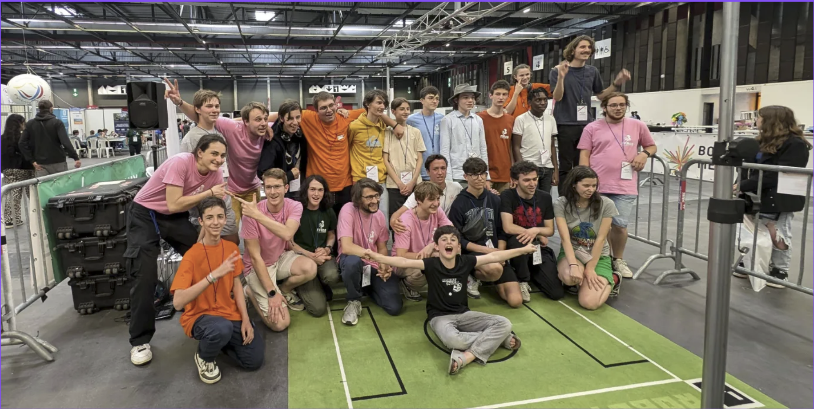

Projet RoboCup
Projet Personnel / Associatif
Mon parcours RoboCup : compétiteur, développeur et arbitre international.

Mon parcours RoboCup : compétiteur, développeur et arbitre international.
La RoboCup est une compétition internationale de robotique visant à promouvoir la recherche en intelligence artificielle et en robotique intelligente. Mon implication couvre plusieurs facettes : participation en tant que compétiteur dans les ligues RSK/SCT et SSL, prise en main du robot NAO, ainsi qu'arbitrage international en RoboCup Junior.
J'ai participé pendant trois ans à cette ligue Junior. Le projet s'appuie sur RSK (Robot Soccer Kit), le kit de robots utilisé pour jouer des matchs de football robotique. La compétition s'appelle SCT (Soccer Cam Track) : elle demande de programmer en Python les stratégies des robots, leurs déplacements et leur comportement pendant un match.

Le NAO Challenge est un défi de prise en main du robot humanoïde NAO (SoftBank Robotics). Ce challenge permet de se familiariser avec la programmation d'un robot humanoïde à travers différentes épreuves ludiques et techniques : marche, interaction homme-robot, et chorégraphies programmées.

En parallèle de ma participation en tant que compétiteur, j'ai eu l'opportunité d'arbitrer des compétitions RoboCup Junior sur la ligne SCT (Soccer Cam Track) à différents niveaux, de l'échelon académique jusqu'à l'international.
Arbitrage des qualifications académiques régionales de la ligne SCT.
Arbitrage de la compétition nationale RoboCup Junior France.
Arbitrage lors de la RoboCup Junior européenne à Bari, en Italie 🇮🇹.

La Small Size League (SSL) est la ligue de la RoboCup Major dédiée au football robotique. Au sein de l'équipe NAMec, je participe au développement de robots capables de jouer un match de football en autonomie.